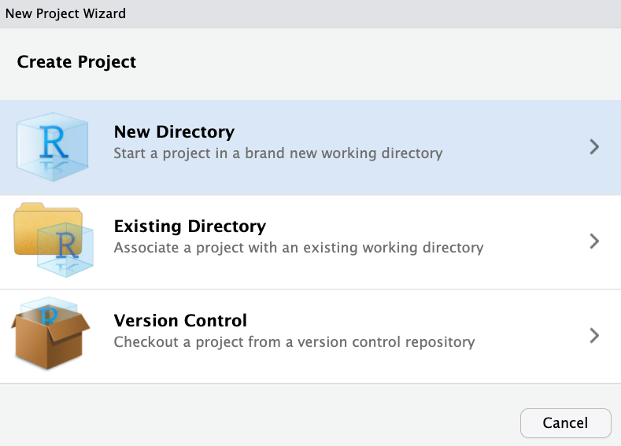

Preliminaries: Getting started in RStudio
In STAT 216, we will use the statistical package R to analyze data through the IDE (integrated development environment) RStudio.
We recommend accessing this program through the MSU RStudio server: rstudio.math.montana.edu/. Please reference the Statistical computing section of the Welcome chapter for other options for accessing RStudio and for instructions on how to download and install R and RStudio on your own computer.
We will begin to learn how to code in R in Section @(#data-in-r). This preliminaries chapter will introduce you to the RStudio environment itself.
0.1 Logging into the RStudio server
When you navigate to the MSU RStudio server, you will see the following sign-in screen:

Your username is your 7-character NetID (in the form x##x###, where x is a letter and # is a number), and your password is the password associated with your NetID.
All registered Stat 216 students should have access to this server. If you are enrolled in the course, but receive the error “Incorrect or invalid username/password” when attempting to log in, take the following steps:
- Ensure that you are using your 7-character NetID as your username. This is of the form x##x###, where x is a letter and # is a number. Your email address will not work to log into the RStudio server.
- Ensure that you are using the correct password that is associated with your NetID account. You can do this by logging into another site that requires your NetID (e.g., MyInfo) with the same credentials.
- Reset your NetID password at password.montana.edu. Your NetID password expires 180 days from the day you set it. If your password has expired, you will not be able to log into the RStudio server.
After you have tried all the steps above, if you continue to have issues logging in, please email Stat 216 Faculty Course Supervisor Dr. Stacey Hancock. You may also refer to the Statistical computing section of the Welcome chapter for other options for accessing RStudio.
After logging in, you will see the RStudio working environment, displayed in Figure 0.1 below.

Figure 0.1: RStudio working environment.
0.2 Projects
The RStudio workflow operates best by the use of “Projects”. Think of a “Project” as its own R session with its own folder. You should create a separate project for each activity or assignment in this course that requires the use of R:
- In the top right corner, you will see a dropdown menu next to “Project” that currently says “(None)”. Click on this menu and choose “New Project”.

OR Click on the “File” menu in the top left and select “New Project”.
- A “New Project Wizard” window should pop up. Click “New Directory”. 

- Give your project directory a name (e.g., Assignment1). Do not use spaces or other characters in the name.
- Click “Browse” and choose a location where you would like to save your project. If you click on the “Home” button, it will leave the location as “~”, as shown below. Alternatively, you can create a new folder to store your project. Note that this location is on your server account, not on your computer.
- Leave all other boxes unchecked, and click “Create Project”.

You should notice the project name appear as a folder under the “Files” window in the bottom right. If you click on that folder, you will see the project file (with an .Rproj extension). Save any script files, data sets, or other files related to this project in the same folder.
0.3 R script files
You can type directly into the Console after the > symbol to run R code:
> 3+5
[1] 8However, if you would like to save your code for future use, we write our R commands in an R script file. A script file is just a text file with the extension .R.
In your RStudio environment, click the “New File” option under the “File” menu, and select “R Script”.
A window in the top left of the RStudio environment will appear. This is your script file!
Try it!
- Open a new
Rscript file. - Type the following commands in the file:
3+5
sqrt(10)- Highlight the two lines you just typed. Click the “Run” button, which looks like a blank page with a green right arrow.
Both your code and the output from the code should appear in the Console window.
#> [1] 8
#> [1] 3.16To save your script file, click the Save icon, or go to File -> Save. Browse to the location where you’d like to save the file (which should be the same folder as the current Project file), name the file, and click Save. The name of the R script file should have changed to the name you chose (e.g., MyFirstScript.R), and the file should appear in your list of files in the bottom right.
0.4 Loading data
RStudio can load data from a variety of sources, including .txt, .csv, or .xlsx files, and can even load data from a website. For all of the activities and assignments in this course, you will be loading a data set from the Stat 216 website. The code for loading these data sets will be included in a provided R script file. For example, the following code will load the “Current Population Survey” data set for Activity 3, and save it in an object called “CPS”.
CPS <- read.csv("https://math.montana.edu/courses/s216/data/cps.csv")After running this line of code, you will see the object CPS appear in your “Environment” list, with the information that the data set contains 534 observations and 11 variables measured on those observations.

Clicking on the name CPS or typing the command View(CPS) opens a new window that displays the data set.
For your course project, you will have your own data set file which you will need to import into RStudio. To read a data set file into RStudio when using the MSU server, you first need to upload the data set into your project. Once the data set is in your server account files, you can use the “Import Dataset” button to import the data set from that location.
Try it!
First, download any of the data sets shown on the Stat 216 webpage, and save it to your computer. The website will note the extension of the file (e.g., .txt, .csv, .xlsx).
- In RStudio, click the “Upload” button under the “Files” tab in the bottom right.

- Click the “Browse” button and navigate to the location on the server where you would like to save the data set.
- Click “Choose File”, and navigate to where you saved the data set on your computer. Click on the data set file name, click “Choose for Upload”, then click “OK”.
- Under the “Environment” tab, click “Import Dataset”.
A drop-down menu will appear, and you can choose the type of file in which your data is stored. Common formats include text files (e.g., .csv, .txt) — select “From Text (readr)” — and Excel spreadsheets (.xlsx) — select “From Excel”.
- Click “Browse”, and navigate to the location on the server where the data was uploaded. RStudio will show you a data preview — each observation should be a single row, and each variable should be a single column. Then click “Import”.
You will see the data object appear in the “Environment” (its name will be whatever the filename was), and RStudio will open a window to view the data set.
0.5 Exporting files
Since you will be working in RStudio on a server, and not on your local computer, if you would like to use any of the files generated in RStudio, you first need to export them.
Exporting R script files
You can export any of the R script files saved in your server files (or any other type of file) by checking the box next to the file, then clicking “More”, and “Export”. It will ask you to specify a name for the file. Then click “Download”.

Try it!
- Copy and paste the following code into your script file; then highlight the code and click Run. (You will see this code in Activity 3!)
library(tidyverse)
myopia <- read.csv("https://math.montana.edu/courses/s216/data/ChildrenLightSight.csv")
myopia %>%
ggplot(aes(y = Light)) +
geom_bar(stat = "count") +
labs(title = "Frequency Bar Plot of Level of Myopia",
x = "Frequency",
y = "Level of Myopia") +
coord_flip()A bar plot should appear under the “Plots” tab.
- Click the “Export” button, and then you can choose to export the plot either as an image file (e.g., .png, .jpeg), a pdf file, or to copy to the clipboard (e.g., for pasting into a Word document).
If you are saving the plot to your computer (rather than copying the plot), a window will pop up with various options. Choose the directory on your computer where you would like to save the file, give your plot a name, change the dimensions if desired, and click Save.
0.6 Home
In the RStudio environment, next to your NetID in the top right corner is a “home” icon. Click this icon, and it will take you to your dashboard.

From here, you can see how many sessions you have running under the “Sessions” title, and you will see your list of projects under the “Projects” title. You can click on any of these sessions or projects to return to that session/project.
0.7 Troubleshooting
One of the most frustrating things about learning and using R is when an error message pops up. Sometimes the error message is descriptive, but sometimes it is cryptic. Most times, the error message will include the line of code in which the mistake was made.
Here are some tips on what to do when this happens:
- Do you have any missing parentheses? Check that all opening parentheses have an associated ending parenthesis.
- Did you forget a comma?
- Is something in quotes that shouldn’t be? Is something not in quotes that should be?
- Did you type the variable or object name correctly?
Ris case sensitive, so the case of the letters needs to match correctly. - If you were trying to run an entire script file, try running it line-by-line to see where the error happens.
- If you are trying to run an
Rfunction, pull up the help file for that function to make sure all the arguments are specified correctly. E.g., Type?lmto see the help file for thelmfunction. - Copy-and-paste the error message, then input that message in quotes into Google. Searching the phrase in quotes will make sure that specific error shows up in the top results.
- Visit your instructor’s office hours or the Math Learning Center, share your screen to show the error, and we can help troubleshoot with you.
Some common error messages and their reasons include:
-
“could not find function”. This error occurs when an
Rpackage is not loaded properly or due to misspelling of the function or data set name. Remember, with everyRsession, you need to “load” the required packages using thelibrarycommand, e.g., The codelibrary(catstats)will load thecatstatspackage. - “object not found” or “error in eval”. This error occurs when the particular object in question does not exist or is empty.
-
“non-numeric argument to a binary operator”. This error may occur when you’re trying to run a function that requires a numerical vector (e.g.,
mean), but you input a character vector.
Remember, even experienced R users still get errors! It’s all part of the learning process.
0.8 Extra references
There are many websites designed to provide help on how to use R and RStudio, but it is sometimes hard to find help at the right level. Here are some additional recommended websites for getting started in R and RStudio in STAT 216:
RStudio IDE Cheatsheet: For an annotated picture of the RStudio environment, coding keyboard shortcuts, and probably more than you want to know about the features of RStudio, refer to this two-page “cheatsheet”. RStudio produces many of these cheatsheets. The Data visualization with
ggplot2cheatsheet is also helpful in this course.Using RStudio: This is the RStudio help pages for the introductory statistics course at Gustavus Adolphus College. Like MSU, students use RStudio through a server; however, they use
RMarkdown documents, which are slightly more involved than theRscript files we use in STAT 216. These pages have some tips on how to get started, and brief instructions for creating tables, statistics, plots, and theory-based tests.-
R for Data Science: This book by Hadley Wickham (the creator of
tidyverseand many otherRpackages and resources), has much more content than we need, but some of the sections are particularly helpful: ModernDive: Statistical Inference via Data Science — Chapter 1: Getting Started with Data in R: Though this textbook is at a slightly higher level that STAT 216, its first chapter gives a great explanation of what exactly
Rand RStudio do, explaining the differences between point-and-click interfaces and an “interpreted language” likeR. Chapter 2 of this book gives a detailed overview of data visualization methods using theggplot2Rpackage.R Data: A free “course” that includes videos with interactive elements. Topics include: variables and data structures, visualizing data using the
ggplot2Rpackage, statistical tests, and data wrangling. The videos on visualizing data will be particularly helpful during the first few activities in the course.Chester Ismay has a great argument for why we should use
R. If you’re wondering why STAT 216 usesRand RStudio instead of other statistical software, read this short chapter.